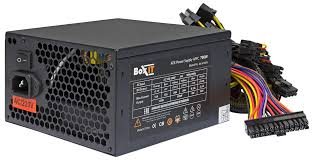
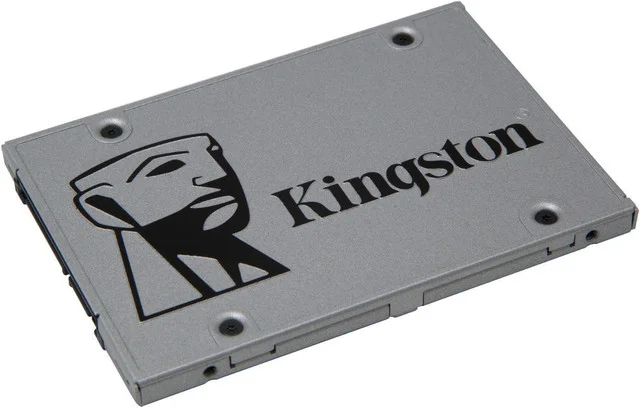

Язык программирования общего назначения, который стабильно занимает высокие места в рейтингах популярности.
Приложения на Java могут работать на любом компьютере, для этого создана виртуальная Java-машина. На Java активно разрабатывают мобильные
приложения под операционную систему Android.
Видеокарта
Этот язык — один из самых популярных, он широко используется для разработки программного обеспечения.
С его помощью программисты создают операционные системы, разнообразные прикладные программы, драйверы устройств,
приложения для встраиваемых систем и игры. Синтаксис C++ унаследован от языка C.
Блок питания

Блок питания компьютера (БП) – это электронное устройство, формирующее напряжение, необходимое определенному компоненту ПК, из напряжения электрической сети. На территории России блок питания преобразует переменный ток от электросети 220В и частотой 50Гц в несколько низких значений постоянного тока: 3,3В; 5В; 12В и т.д.
Основной параметр блока питания – мощность, которая исчисляется в ваттах (Вт). Чем мощнее компьютер, тем мощнее блок питания требуется. Обычно это 300-500 Вт в бюджетных и офисных компьютерах и 600 Вт и более в мощных станциях и игровых ПК.
SSD накопитель

Твердотельный накопитель (англ. Solid-State Drive, SSD) — компьютерное энергонезависимое немеханическое
запоминающее устройство на основе микросхем памяти, альтернатива жёстким дискам (HDD).
Наиболее распространённый вид твердотельных накопителей использует для хранения информации
флеш-память типа NAND, однако существуют варианты, в которых накопитель создаётся на базе
DRAM-памяти, снабжённой дополнительным источником питания — аккумулятором. Помимо собственно
микросхем памяти, подобный накопитель содержит управляющий контроллер.
В настоящее время твердотельные накопители используются как в носимых
(ноутбуках, нетбуках, планшетах), так и в стационарных компьютерах для повышения производительности.